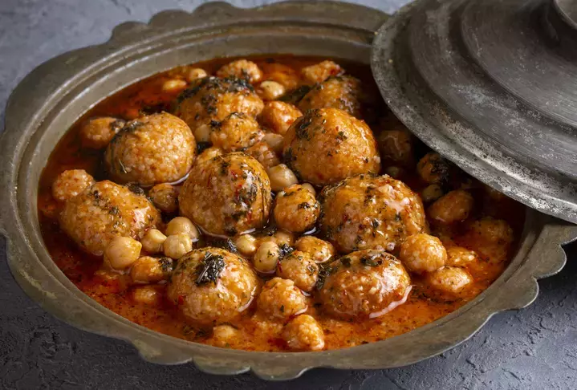

Adana Mutfak Kültürü
Güneyin Baharatlı Lezzeti

Akdeniz’in sıcak kenti Adana, zengin mutfağıyla Türkiye’nin en lezzetli şehirlerinden biridir. Baharat kullanımı, et yemekleri ve sokak lezzetleriyle öne çıkan Adana mutfağı, damaklarda unutulmaz izler bırakır.
Adana yemek kültürü, kebap ve etli yemeklerin yanı sıra yöresel tatlılarıyla da dikkat çeker. Acı ve baharat kullanımındaki ustalık, yemekleri benzersiz kılar.
- Et ve kebap ağırlıklı mutfak
- Bol baharat ve acı kullanımı
- Taze sebzeler ve salatalar
- Yöresel tatlılar ve içecekler
Öne Çıkan Yemekler ve Mekan Önerileri

Adana Kebap
Acılı kıymayla hazırlanan ve mangalda pişirilen Adana'nın simge yemeği.
Nerede Yenir?
- 📍 Kebapçı Mesut
- 📍 Onbaşılar Kebap
- 📍 Elem Restaurant

Şırdan
Baharatlı iç pilavla doldurulmuş, özel pişirme tekniğiyle hazırlanan Adana'ya özgü bir sakatat yemeği.
Nerede Yenir?
- 📍 Şırdancı Bedo
- 📍 Şırdancı Emin Usta
- 📍 Küçük Saat Şırdancısı

Bici Bici
Sıcak yaz günlerinin vazgeçilmezi, gül şerbetiyle tatlandırılan buzlu tatlı.
Nerede Yenir?
- 📍 Bici Bici Ali Usta
- 📍 Tarihi Bici Bici Durağı
- 📍 Bici Bici Ayşe Teyze

Analı Kızlı
İçli köfteli ve nohutlu yoğurtlu çorba; yöresel sıcak bir lezzet.
Nerede Yenir?
- 📍 Kazancılar Sofrası
- 📍 Şalgamcı Tahir
- 📍 Kebapçı Mesut